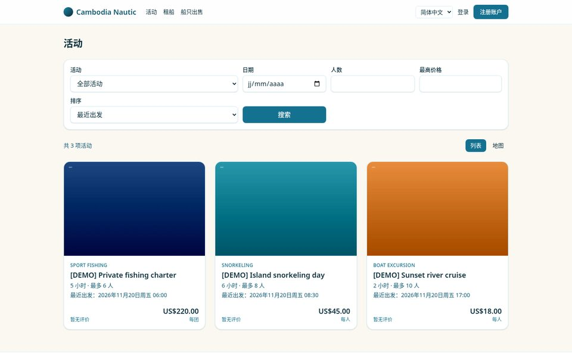
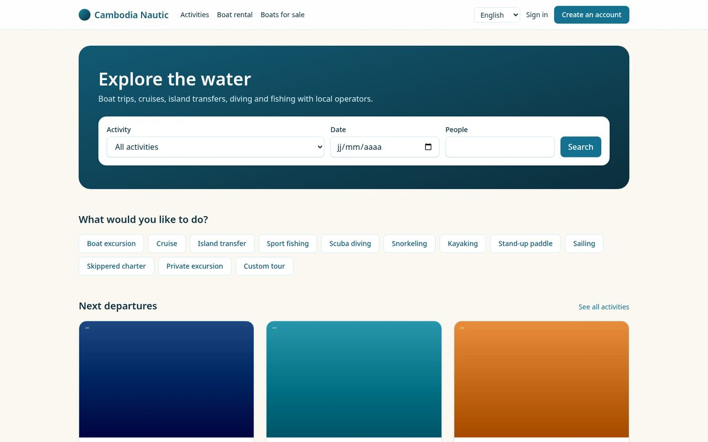
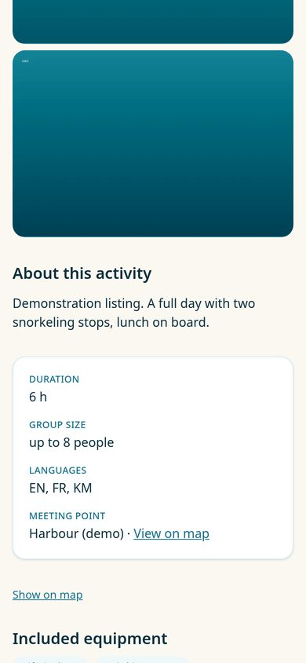
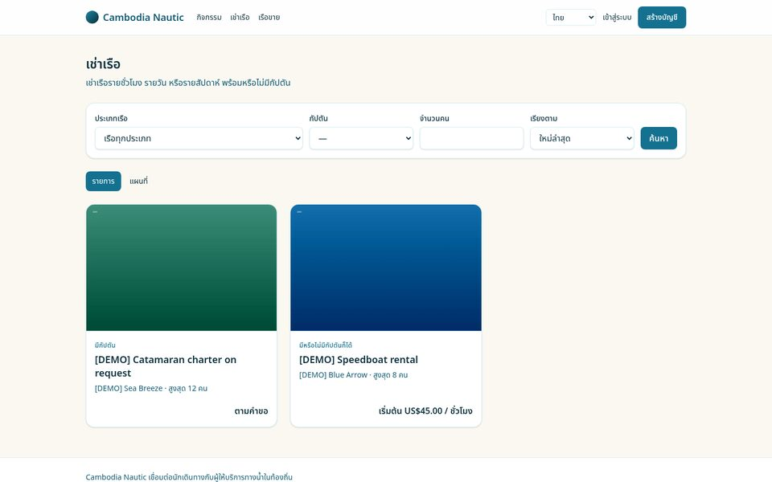
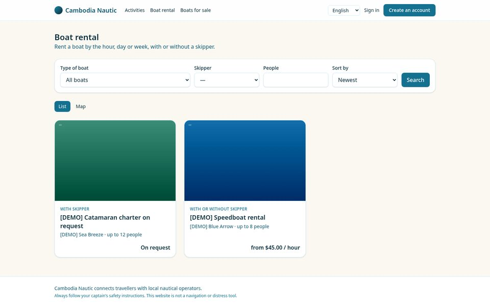

Cambodia Nautic
Every version of this page since 19 Nov 2026, newest first: what changed, and the captures and videos as the page showed them at the time.
Chaque version de cette page depuis le 19 nov. 2026, de la plus récente à la plus ancienne : ce qui a changé, et les captures et vidéos telles que la page les montrait à l’époque.
គ្រប់កំណែនៃទំព័រនេះ តាំងពីថ្ងៃទី 19 វិច្ឆិកា 2026 ពីថ្មីបំផុតទៅចាស់៖ អ្វីដែលបានផ្លាស់ប្តូរ និងរូបថតអេក្រង់ និងវីដេអូ ដូចដែលទំព័របានបង្ហាញនៅពេលនោះ។
Nothing on this page has been regenerated: every capture and video is the file the site published at the time, recovered from its Git history. What the site never published is not here. Since 21 November 2026, every change to the project page adds a version here, and the captures, videos and Last changes it replaces are kept.Rien sur cette page n’a été régénéré : chaque capture et chaque vidéo est le fichier que le site publiait à l’époque, retrouvé dans son historique Git. Ce que le site n’a jamais publié n’y figure pas. Depuis le 21 novembre 2026, chaque changement de la page du projet ajoute ici une version, et les captures, vidéos et derniers changements qu’il remplace sont conservés.គ្មានអ្វីនៅលើទំព័រនេះត្រូវបានបង្កើតឡើងវិញទេ៖ រូបថតអេក្រង់ និងវីដេអូនីមួយៗ គឺជាឯកសារដែលគេហទំព័របានផ្សាយនៅពេលនោះ ដែលបានយកមកវិញពីប្រវត្តិ Git របស់វា។ អ្វីដែលគេហទំព័រមិនដែលផ្សាយ មិនមាននៅទីនេះទេ។ តាំងពីថ្ងៃទី 21 ខែវិច្ឆិកា ឆ្នាំ 2026 ការផ្លាស់ប្តូរនីមួយៗនៃទំព័រគម្រោង បន្ថែមកំណែមួយនៅទីនេះ ហើយរូបថតអេក្រង់ វីដេអូ និងការផ្លាស់ប្តូរចុងក្រោយ ដែលវាជំនួស ត្រូវបានរក្សាទុក។
From the latest to the first.De la plus récente à la première.ពីកំណែចុងក្រោយ ដល់កំណែដំបូង។
-
Status by phaseL’état par phaseស្ថានភាពតាមដំណាក់កាល
The page catches up with the repository: the status by phase, coverage and figures.
La page rattrape le dépôt : l’état par phase, la couverture et les chiffres.
ទំព័រនេះធ្វើបច្ចុប្បន្នភាពតាម repository៖ ស្ថានភាពតាមដំណាក់កាល វិសាលភាព និងតួលេខ។
-
Last changesDerniers changementsការផ្លាស់ប្តូរចុងក្រោយ
The page now ends with a summary of the repository’s latest commits, in English, French and Khmer.
La page se termine désormais par un résumé des derniers commits du dépôt, en anglais, en français et en khmer.
ឥឡូវនេះ ទំព័របញ្ចប់ដោយសេចក្តីសង្ខេបនៃ commit ចុងក្រោយរបស់ repository ជាភាសាអង់គ្លេស បារាំង និងខ្មែរ។
-
Its own pageSa propre pageទំព័រផ្ទាល់ខ្លួន
Cambodia Nautic gets its page in English, French and Khmer: the boating platform for South-East Asia, its API, its portal in five languages and its mobile app, and where each phase stands; not online yet.
Cambodia Nautic reçoit sa page en anglais, en français et en khmer : la plateforme nautique pour l’Asie du Sud-Est, son API, son portail en cinq langues et son application mobile, et l’état de chaque phase ; pas encore en ligne.
Cambodia Nautic ទទួលបានទំព័ររបស់ខ្លួន ជាភាសាអង់គ្លេស បារាំង និងខ្មែរ៖ វេទិកាទូកសម្រាប់អាស៊ីអាគ្នេយ៍ API របស់វា វិបផតថលជាប្រាំភាសា និងកម្មវិធីទូរស័ព្ទ ព្រមទាំងស្ថានភាពនៃដំណាក់កាលនីមួយៗ។ មិនទាន់ដាក់ឱ្យប្រើលើអ៊ីនធឺណិតនៅឡើយទេ។
13 captures13 capturesរូបថតអេក្រង់ 13
On the pageSur la pageនៅលើទំព័រ 
On the pageSur la pageនៅលើទំព័រ 
On the pageSur la pageនៅលើទំព័រ 
On the pageSur la pageនៅលើទំព័រ 
On the pageSur la pageនៅលើទំព័រ 
On the pageSur la pageនៅលើទំព័រ 
On the pageSur la pageនៅលើទំព័រ 
On the pageSur la pageនៅលើទំព័រ 
On the pageSur la pageនៅលើទំព័រ 
On the pageSur la pageនៅលើទំព័រ 
On the pageSur la pageនៅលើទំព័រ 
On the pageSur la pageនៅលើទំព័រ 
On the pageSur la pageនៅលើទំព័រ